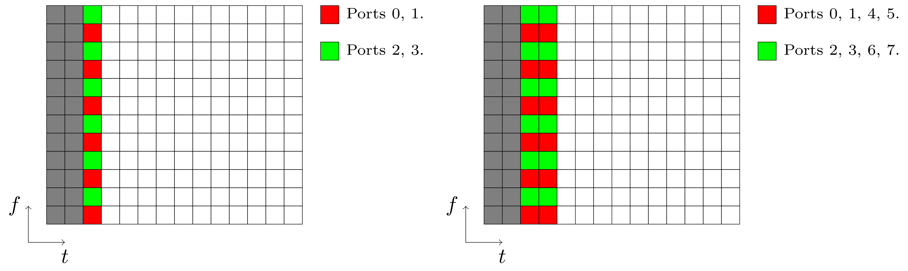
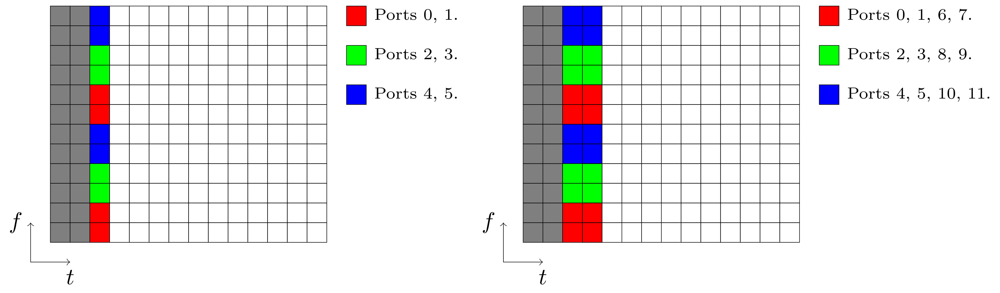

NR - Demodulation Reference Signal (DMRS)
Table of Contents
Conceptions
Just as its name indicates, demodulation reference signal (DMRS) is the reference signal dedicated for demodulation. Different from LTE system, the DMRS in NR system is comprised of a frontloaded DMRS and a few optional additional DMRS.
Frontloaded DMRS
Frontloaded DMRS aims to reduce the duration of demodulation and decoding. There are a couple of mapping schemes.
- Mapping type A: it lies the symbol second to the PDCCH region, e.g., in normal-slot-based transmission.
- Mapping type B: it begins with the first data symbol scheduled, e.g., in mini-slot-based transmission.
Additional DMRS
Additional DMRS is proposed to support high speed mobility, e.g., 500km/h. Each additional DMRS is a simple repetition of the corresponding frontloaded DMRS, e.g., identical subcarriers and equal OFDM symbol number.
- For single-symbol frontloaded DMRS, up to 3 additional DMRS can be supported.
- For double-symbol frontloaded DMRS, at most 1 additional DMRS is supported.
Sequence Generation
DMRS symbols are a sequence of QPSK-modulated Gold sequence, which is initialized with
\begin{align*} c_{\text{init}} = \left[ 2^{17}(N_{\text{symb}}^{\text{slot}}n_{s,f}^{\mu} + \ell + 1)(2N_{\text{ID}}^{n_{\text{SCID}}}+1) + 2N_{\text{ID}}^{n_{\text{SCID}}} + n_{\text{SCID}} \right] \mod 2^{31} \end{align*}where
- \(N_{\text{symb}}^{\text{slot}}\) is the number of symbols in a slot.
- \(n_{s,f}^{\mu}\) is the index of the slot within a frame.
- \(\ell\) is the index of the symbol within a slot.
- If DCI format 1-1 is used, \(n_{\text{SCID}} \in \{0, 1\}\) is configured by the field of DMRS sequence initialization; otherwise, \(n_{\text{SCID}} = 0\).
- 16-bit \(N_{\text{ID}}^0\), \(N_{\text{ID}}^1\) are respectively configured by scramblingID0 and scramblingID1 in DMRS-DownlinkConfig/DMRS-UplinkConfig for downlink/uplink transmission.
Port Number
Irrespective of downlink or uplink transmission, the number of layers depend on the number of DMRS ports. In NR system, DMRS ports are multiplexed based on frequency division multiplexing (FDM) and orthogonal cover code (OCC). A FDM entry corresponds to a code division multiplexing (CDM) group. Within a CDM group, OCC is applied in the frequency domain in single-symbol DMRS case and in both frequency and time domains for double-symbol DMRS.
- For SU-MIMO, up to 8 and 4 layers can be supported for downlink and uplink transmission, respectively.
- For MU-MIMO, irrespective of downlink or uplink, up to 12 layers can be supported, constrained to at most 4 layers for each user.
Pattern
In NR system, there are two types of DMRS, a.k.a., type-1 and type-2, configured by dmrs-Type.
- For CP-OFDM, both types are supported1.
- For DFT-S-OFDM, only type-1 is supported.
Regardless of DMRS type, a frontloaded DMRS has one or two OFDM symbols, which is configured by maxLength in DMRS-DownlinkConfig/DMRS-UplinkConfig for downlink/uplink transmission, and dynamically indicated by DCI.
Type-1
For type-1 DMRS, an example pattern can be illustrated in Figure 1, with 2 combs corresponding to 2 CDM groups.

Figure 1: Type-1 DMRS
Type-2
Similarly, an example pattern of type-2 DMRS can be shown in Figure 2 with 3 FDM entries corresponding to 3 CDM groups.

Figure 2: Type-2 DMRS
- In single-symbol case, up to 6 ports are supported.
- 3x FDM
- 2x frequency domain OCC
- In double-symbol case, up to 12 ports are supported.
- 3x FDM
- 2x frequency domain OCC
- 2x time domain OCC